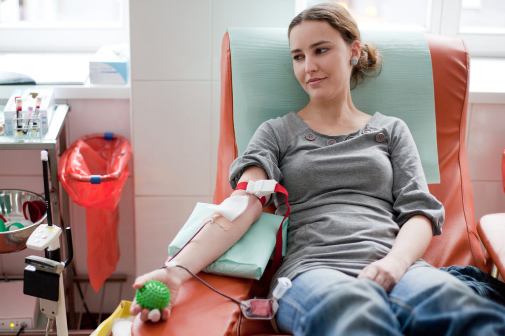

Blood Donation enforces Drug & Cosmetic Act, National blood policy standards and guidelines ensuring proper collection & donation, effective management and monitoring the quality and quantity of the donated blood.
Donating blood help in reducing the risk of damage to liver and pancreas
Blood must always be stored at a temperature between +2 degree C to +6 degree C in a blood bank refrigerator
Red blood cells carry oxygen from our lungs to the rest of our bodies
Donating blood is a simple thing to do, but can make a big difference in the lives of others.
Registration:
You will complete donor registration, which includes information such as your name, address, phone number, and donor identification number (if you have one).
Health History and Mini Physical:
1. You will answer some questions during a private and confidential interview about your health history and the places you have traveled.
2. You will have your temperature, hemoglobin, blood pressure and pulse checked.
Donation:
1. We will cleanse an area on your arm and insert a brand–new, sterile needle for the blood draw. This feels like a quick pinch and is over in seconds.
2. You will have some time to relax while the bag is filling. (For a whole blood donation, it is about 8-10 minutes. If you are donating platelets, red cells or plasma by apheresis the collection can take up to 2 hours.)
3. When approximately a pint of blood has been collected, the donation is complete and a staff person will place a bandage on your arm.
After you give blood:
Take the following precautions:
The entire process takes about one hour and 15 minutes; the actual donation of a pint of whole blood unit takes eight to 10 minutes. However, the time varies slightly with each person depending on several factors including the donor’s health history and attendance at the blood drive.
You must wait at least eight weeks (56 days) between donations of whole blood and 16 weeks (112 days) between Power Red donations. Platelet apheresis donors may give every 7 days up to 24 times per year. Regulations are different for those giving blood for themselves (autologous donors).
In most states, donors must be age 17 or older. Some states allow donation by 16-year-olds with a signed parental consent form. Donors must weigh at least 110 pounds and be in good health. Additional eligibility criteria apply.
The plasma from your donation is replaced within about 24 hours. Red cells need about four to six weeks for complete replacement. That’s why at least eight weeks are required between whole blood donations.